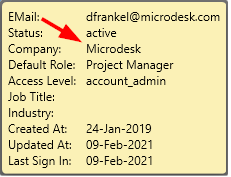
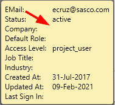
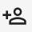
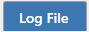
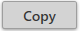

Import Members to Projects
Importing a user and adding a user are synonymous concepts.
New project members can be added to one or more BIM 360®/Forma projects. They can be added when Multi-Select is set to either On or Off. A company and role needs to be selected to assign to the user.
The "Import Project Members" button will only be enabled if the user is on the "Hub Members" tab, with at least one project and at least one hub member selected. This logically makes sense, since the purpose of the "Import Project Members" button is to import hub members to projects.
Company and Roles can be assigned to the user when adding the user to a project. Options have been provided to assign a defined company and roles, or to set the company and roles to their default values, or to not assign any company or roles for the user. The "Keep Current" option will only be enabled when the user is performing an Update Project Members process.
The options "No roles/company", "Set Default", or "Keep Current" cannot be used in tandem with defined roles or company.

Set default company, unassign company, keep current company options:

Refer to the Hub members popup information display to view the default company and role:

Notice this setting may also be blank:

Likewise, one or more project Roles can be assigned. The Default Role for each member may be viewed right below the Company, as shown on the Hub member information display, above.
The following example shows an Import for Multiple Project selection. However, except for the number of projects selected, Single Project selection appears and operates in the same manner.
With the company and/or roles selected, the checked members are now ready for assignment to the selected projects by pressing the Import Members to assigned projects button

.
Assigning Product Access (Forma/ACC):
When members are added to Forma/ACC projects, the following pop up will appear to assign product access for the project members.
Choose to either assign the user as a Project Administrator, a Project Member, or to Keep their Current access.
Please note -- Keep Current is only available for updating project members.
Additionally, additional products can be assigned.

Product Templates can be created for easier designation and re-usability:


In the example below, a template was created. The template name and description has both been entered and the access level was assigned. After this, the Save button is pressed to store the template:

Templates can also be duplicated, edited, or removed.

Once the template has been saved, it can be selected from the drop-down list in the "Import Members to Projects" process:

Lastly, if the desire is to keep the current product access while updating the members on the project, then the following checkbox can be checked before pressing the Import project members button. This button will only be enabled when attempting to Update Project Members:

BIM 360® Product Access Assignment:
Project Admin Access can be either added, removed, or kept current for adding/updating users on BIM 360® projects 
Continuing with the member import process:
As the import process continues, the information bar in the bottom right of the application will indicate what is being written to the log file. This is to provide information on the process while the process is ongoing. Once the process is done, the members selected for import will be unselected. This is to ensure that the members are not accidentally managed without explicit user interaction:

The log window is located below the Member Access Settings. Naviate Cloud Manager displays progress and results as processing occurs. The log screen can be resized as desired.
The

button may also be pressed to bring up the log file in a separate popup window.
The log file name begins with “Import” and incorporates a timestamp as shown at in the above screenshot. The log file naming convention utilizes a timestamp, the same as described above for Projects and Files logs. Logs can be easily copied and pasted by using the built-in

button. Member logs are permanently saved at C:\ProgramData\Microdesk\BIMrx.CloudManager\Logs\Users and may be accessed there at any time.The  button will open the local folder location of the current log file.
button will open the local folder location of the current log file.
In addition to the “Import” log, each execution of Import Members generates a timestamped “Response” log. The additional response log is seen in the entry list as the "Associated Log File Location" for easy finding. It contains the actual data that is used to invoke the Forge APIs when importing members, along with the detailed response received from Autodesk®. However, there is no reason to view these during normal application usage — they are strictly for reference in case needed by Symetri support personnel for diagnosing possible problems.
Of course, the newly-added member also displays in the project member list, which is accessed by switching to the Project Members tab page. With Multi-Select set to Off, a detailed listing for the updated project member displays:

If Multi-Select = On, however, only the project membership information for the currently selected projects is available.

Please Note — there is never a concern about accidentally assigning members to projects to which they are already assigned. Naviate Cloud Manager detects this situation and bypasses those members for that project. The log records them as ‘Skipped’ and doesn’t consider it an error. In other words, all required project-specific members may be safely assigned to a project without concern regarding whether they have already been assigned.
Tip — Assign all members to a project that must have access to the project. If Naviate Cloud Manager sees they are already assigned, it will safely ignore them.